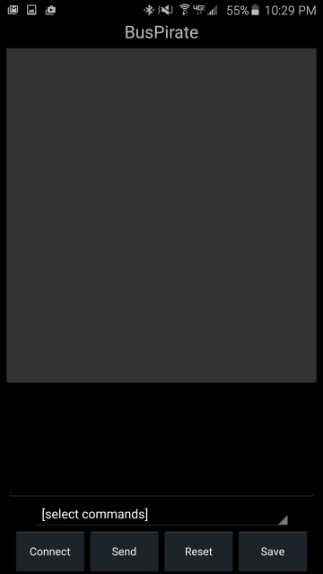
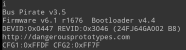
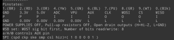
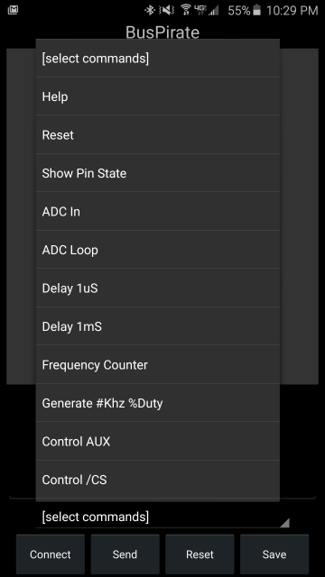
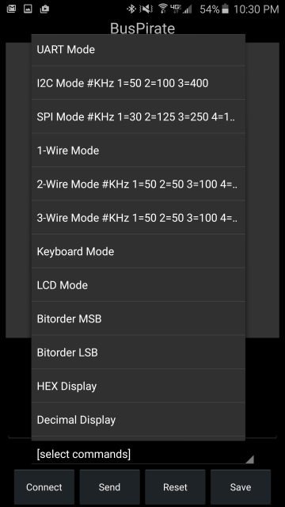
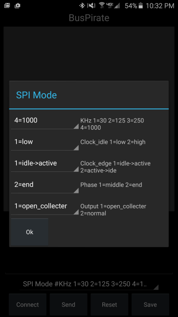
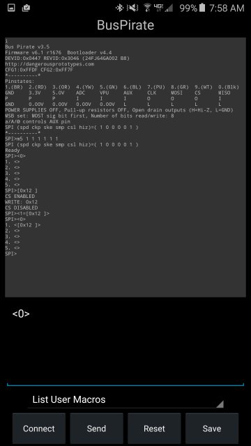
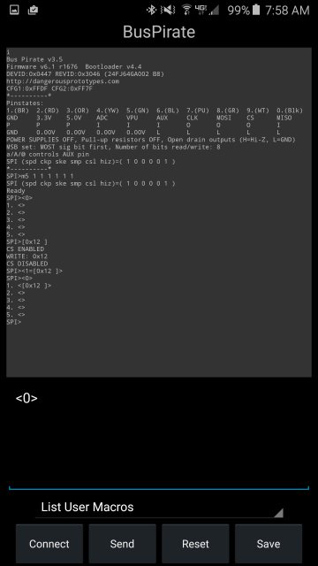

DroidScriptBusPirate is a User Inferface for the BusPirate^ (pocket electronics bench) which runs in the DroidScript^ app^ on Android phones. It simplifies talking to the BP (BusPirate) by providing a list of commands and setup wizards for the commands which require parameters. As a result, you don't have to remember the cryptic command codes.
1. Install DroidScript
https://play.google.com/store/apps/details?id=com.smartphoneremote.androidscriptfree
The app requires permissions for bloody everything because it allows you
to do bloody everything in your phone. It does not (at this time) display
ads or other annoying crap. The author makes money by selling the ability
to turn your script into a stand alone app for the play store.
2. Open a new script. Click the little ... thing in the top bar just to the right of the droid, and select New then enter a name (e.g. "BusPirate") and select JavaScript, then click OK.
3. Long press the new droid icon you made and select Edit. Now replace everything
by pasting in the code from:
https://github.com/JamesNewton/DroidScriptBusPirate/blob/master/BusPirate.js
4. Run the app from there or by single clicking the icon from the main DroidScript screen.
Connect your BusPirate to your Andriod using a
USB
OTG adapter
cable.
Start: The script starts with a this screen showing a large area at the top which displays reponses from the BP (BusPirate), an area below that to edit commands being sent to the BP, a list control below that with all the commands, and buttons at the bottom for Connect, Send, Reset, and Save.

Connect: Press Connect to establish comms with the BP. The script automatically sends the "i" command for infomation about you BP. This script was written for BP Firmware 6.1 and may not include all the commands or parameters for other versions. But it's open source... so modify it. Please fork DroidScriptBusPirate on github, and if possible, setup your mods so that they work with multiple firmware versions.

The top area displays the results in a very small font but this is necessary so that formated responses like the pin state table will display correctly in the width available on a phone.

Menu: Click the [select commands] line to see a list of known commands. This list is long and scrolls to show several screens worth of commands.

Note that some of the commands in the list have parameters indicated with a # or %. For example, Generate will need to know a frequency in KHz and a Duty cycle percent. The bus modes often require many parameters. When you select one of these commands, a wizard dialog appears asking for the desired values for those parameters. Here is the SPI mode wizard, and the result after pressing ok and then after pressing send. Notice the full mode command in the edit window.
 

Edit: You can edit the commands after they are selected, or just type your own commands in the edit window. Pressing enter will send the command just like pressing send. The primary use of the edit window is to send and request data via the bus modes. The sample above far right shows sending a [0x12] via SPI mode. This produces a start, sends a hex 12 and then a stop on the SPI bus.
Send: Press Send to send whatever command is in the edit window to the BP. Note that when you are manually editing the string in the edit window, you can also just press the enter key and that will do exactly the same thing.
Reset: The Reset button just clears the edit area, and sets the command list back to the start so you can quickly select another command.
Save: Pressing the Save button adds whatever is in the edit window to the list of commands with a description which it asks for. Be careful with the description. Keep in mind that a "#" in the description will trigger the wizard to ask for a parameter. E.g. "#KHz" in the description means "add an edit field in the dialog box with KHz as the prompt, and accept numbers only." So "Generate #KHz %Duty" will, when selected, popup a dialog asking for the KHz and Duty and after those values are entered, it will put them into the command string to be sent. It can also display a list of options for the parameter selection wizard. e.g. "#Select 1=one 2=two" Displays a pull down with 1=one and 2=two as the options and "Select" as the description. Somewhat limited at this point as the text of the option must be a single word. e.g. 1=this one results in two entries in the spinner: "1=this" and "one". The text before the = (if present) is used as the output. (Note that "#" is the reset command to the BP, so you can't store new commands that include a BP reset... shouldn't be a great loss).
Macros: Although Save should be very handy for sending complex commands out without having to type them in each time, sometimes it's important to use a complex command in the BP itself. Near the bottom of the command list there are a set of commands for saving the values in the edit box as user macros on the BP. You can see the list of user macros already in the BP by pressing Reset, selecting "List User Macros" and pressing Send and you might want to do that before building up a complex command so you know what slots are available. After your command is built in the edit area, select one of the "Record As Macro #" commands and the edit area will be reformatted into a command to define that macro with whatever was there before. Press Send.